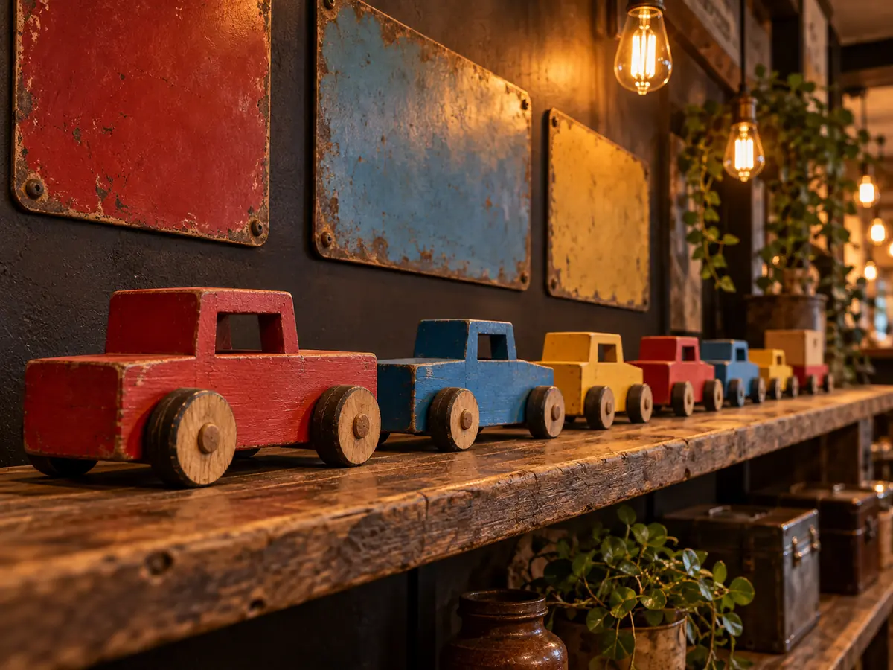

CONCEPT
自分たちの理想を、
そのまま形にした店
GZLAMPは、秋田市添川にある一軒家のカフェです。2021年4月、自宅を兼ねた店として開きました。 車とバイクが趣味の店主夫婦が、それぞれの理想を店に詰め込んだお店です。
GZLAMP ＝ 店主のイニシャル ＋ LAMP
店名は、店主のイニシャルと、こだわりの「エジソンランプ」から考えた造語です。店内には、そのランプが灯っています。
アメリカンビンテージ調の店内。壁には車のメーカーの看板、棚にはお客さんが持ち寄ったミニカー。 ごはんを食べに来た人も、車の話をしに来た人も、同じ12席に座ります。
